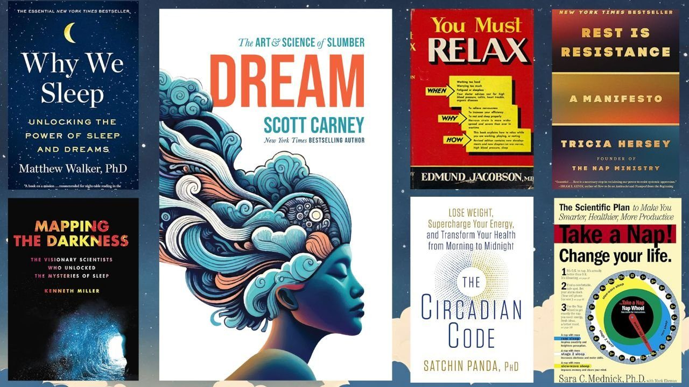
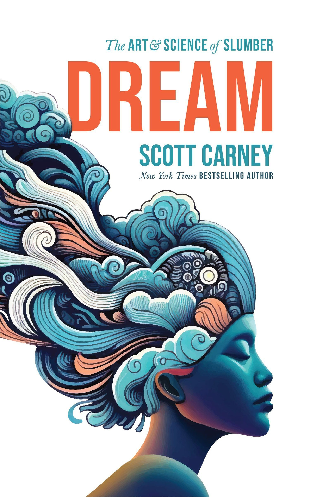
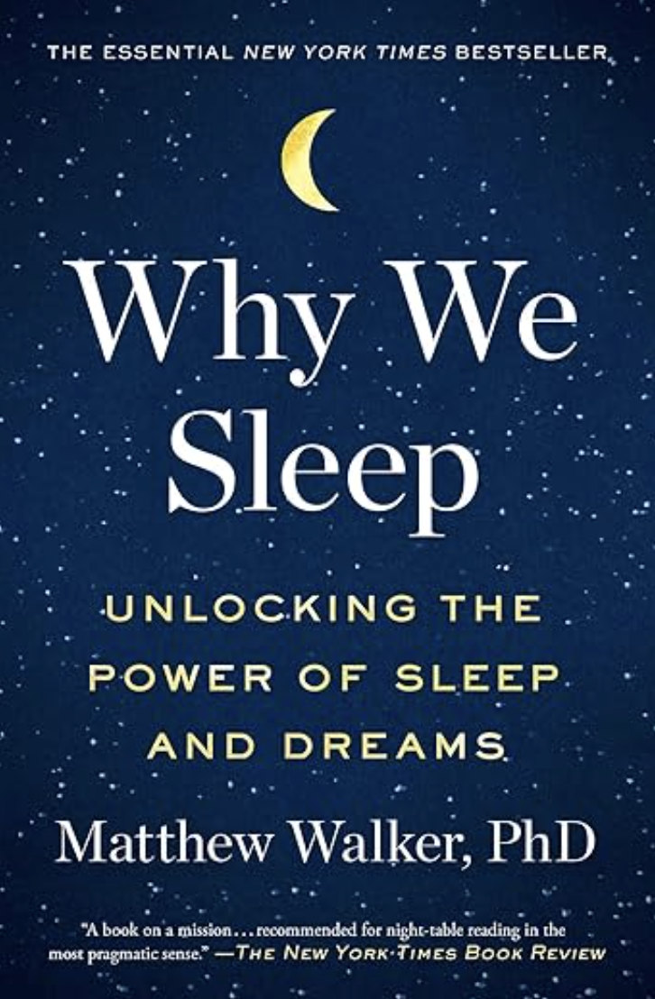
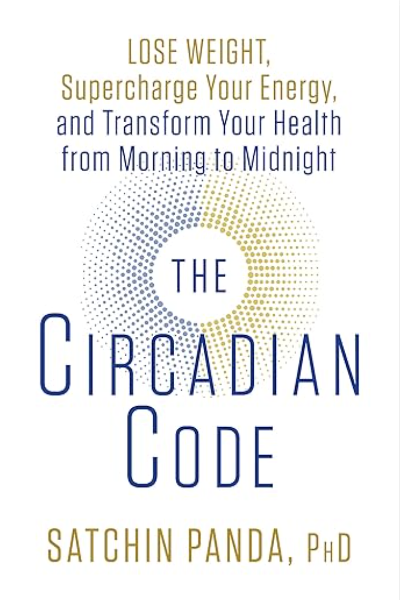
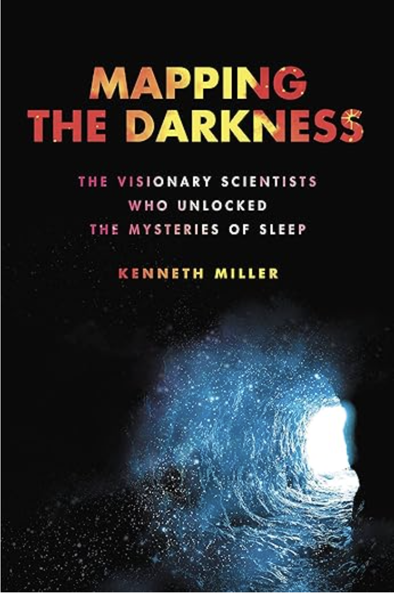
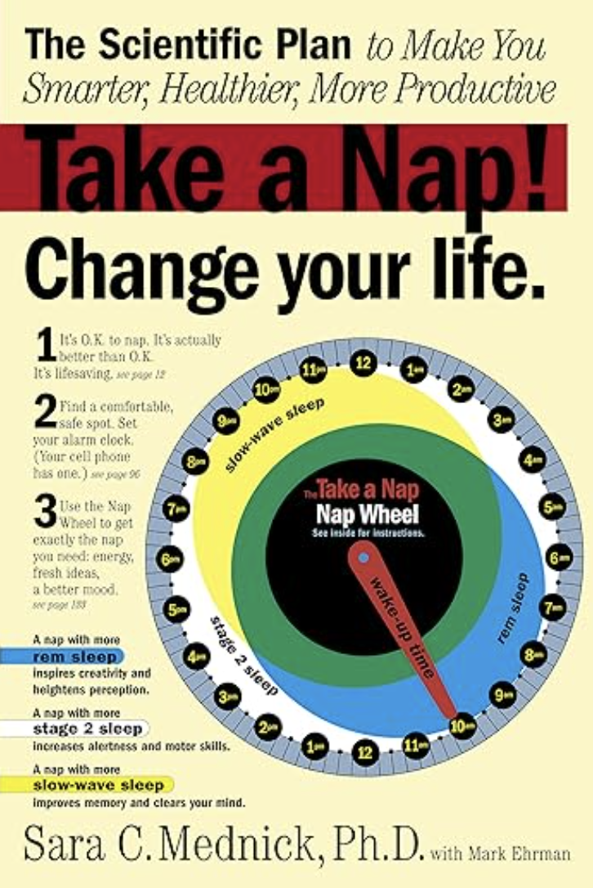
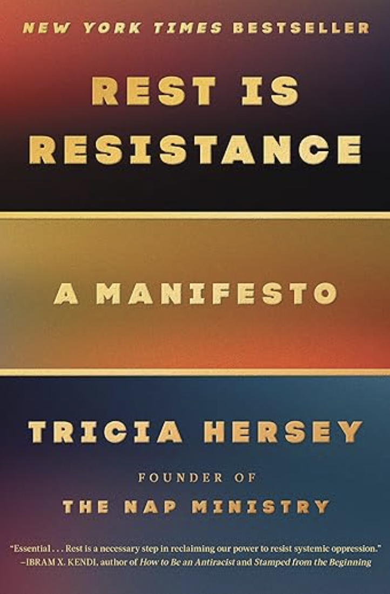
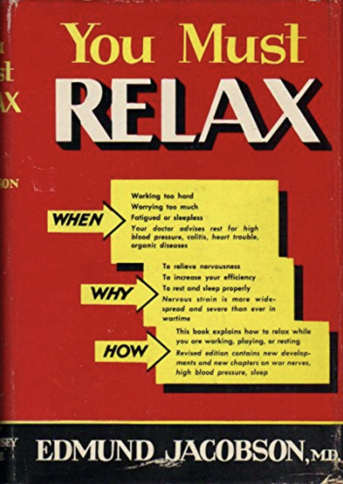

Best Books on Sleep
Is your sleep life stuck in a snooze cycle? Do you wake up feeling like you wrestled a thousand sheep all night, only to stumble through the day fueled by lukewarm coffee and blurry-eyed determination? Fear not, weary warriors of the night! I have a literary bounty of sleep-saving wisdom, ready to guide you from restless nights to restorative slumber.
This is the list of sleep books that you’ve been waiting for offering innovative approaches to navigating the often-mysterious world of dreams, REM cycles, and circadian rhythms. Forget counting sheep – we're talking cutting-edge science, practical tips, and even a dash of philosophy to help you reclaim your nights and rediscover the joy of a truly energized sunrise.
So, ditch the melatonin and grab a book instead. Whether you're a sleep-deprived student yearning for focus, a stressed-out parent chasing elusive quiet time, or simply a curious soul fascinated by the hidden world of slumber. This curated list of sleep-centric gems has something for everyone.
Let's dive in!

Dream: The Art and Science of Slumber
By Scott Carney
If sleeping and dreaming weren’t absolutely vital to human health and well-being it would be the single greatest mistake that evolution ever made. And yet every mammal, insect and microscopic bacteria goes through periodic cycles of activity and inactiveness. Not only that, most of them show signs of dreaming, too. This fast paced romp through sleep science covers how our dreamtime forms the basis of consciousness, restores the immune system and frames emotional health and memory. Carney, who is an investigative journalist and anthropologist, conducts his own controlled sleep experiments, learns both ancient techniques and lab centric techniques to help you get the most out of your nighttime slumber.
Best for: It’s brevity. At just 100 pages it’s everything you need to know about sleep in a single sitting.

Why We Sleep: Unlocking the Power of Sleep and Dreams
by Matt Walker
Sleep scientist and popular podcaster Matt Walker paints a portrait of humanity's most neglected need: sleep. Forget eight hours as a luxury; he reveals it's essential for health, happiness, and even success. Our sleep cycle – REM and NREM dance a vital tango – repairs brains, strengthens memories, and boosts immunity. Sleep deprivation, however, is a silent epidemic, robbing us of focus, resilience, and creativity. It's linked to Alzheimer's, diabetes, heart disease, and even cancer. Walker demolishes myths, like needing only seven hours (spoiler alert: we don't!). He debunks caffeine fixes and exposes the harmful blue light of screens in our bedrooms. Instead, he offers practical tips for crafting a sleep sanctuary: dim lighting, regular schedules, and ditching devices before bed. Ultimately, Walker unveils sleep as a superpower, not a time-waster. It's not just about surviving, but thriving. Prioritize sleep, he urges, and you'll unlock a healthier, happier, and more productive you.
Best for: The most comprehensive guide to the current sleep science.

The Circadian Code
By Satchin Panda
Have you ever noticed how if your sleep schedule starts to go off kilter, that your eating schedule gets a little wonky, too? Satchin Panda is a professor at the Salk Institute who has shown how when you eat might be just as important as what you eat. That’s because our biological rhythms of sleep are intimately connected to when our bodies need to optimally consume and expend energy. The first third of the book is a call to action that outlines the basic functions of sleep, while the remainder of the book explores more targeted advice around weight loss, immune function and even the connection between poor sleep patterns and cancer.
Best for: Tips about how hacking the circadian cycle will help you lose weight

Mapping the Darkness
By Kenneth Miller
Mapping the Darkness isn't just a science book; it's a captivating detective story delving into the uncharted territory of sleep through the personalities of the scientists who unlocked its potential. Miller follows the life stories of the researchers who took our understanding out of the–literal–dark ages where we believed that sleep was mostly unnecessary through the men and women who discover the mysteries of REM sleep, and the hidden symphony of brain activity of slumber that plays an enormous role in how we feel when we’re awake. More than just a historical account; this book is a call to action. It urges us to reclaim our slumber and embrace its immense power. By understanding the hidden language of our dreams and the vital role of sleep in our health and well-being, we can unlock a brighter future for ourselves and future generations.
Best for: The outsized personalities of the sleep scientists.

Take a Nap and Change Your Life
By Sara C. Mednick PhD with Mark Ehrman
If a pharmaceutical company designed a drug that was clinically proven to increase alertness, make you more creative while also reducing your stress, improving your stamina and powering up your sex life there’s no doubt that it would be a total blockbuster. Well, a blockbuster if that super-drug wasn’t free. Welcome to the most comprehensive tome on napping. Mednick, a neuroscientist at the Salk institute offers up a quick technical guide to the benefits of the short mid-day sleep that has everything that you need to know about it without the extensive narrative essays from the rest of this list.
Best for: The only technical book you will ever need on napping.

Rest is Resistance: A Manifesto
Tricia Hersey
Rest is Resistance isn't a self-help manual for better sleep. It's a political manifesto urging us to reclaim rest as a radical act of defiance against oppressive systems. In a world obsessed with productivity and hustle, Hersey challenges the notion that constant activity is our default state and that rest is merely a passive luxury. Her central argument: the capitalist, white supremacist society we live in thrives on our exhaustion. By constantly draining our energy and attention, it keeps us compliant and submissive to its demands. Rest, then, becomes an act of resistance. It's a declaration of agency, a refusal to be consumed by the relentless machine of our modern world.
Best for: reclaiming sleep as a political act of resistance.
Bonus:

You Must Relax
Edmund Jacobson
Until about the year 1934 no one ever said the phrase “you seem tense” in relation to another human. Bridges and cables could be tense, but people were another matter entirely. Then along came the Harvard scientist Edmund Jacobson who observed the neural and cardiovascular tone of people’s bodies and effectively coined the phrase “relax”. In a world where everything old is new again, Jacobsons’ many editions of You Must Relax stayed in print for almost 50 years and set the tone for pretty much everything that we talk about with the benefits of meditation and stress management today. Included in this book is an incredibly complex and onerous technique to relax your nervous system that really does work, but it’s mighty confusing to understand.
Best for: a blast from the past.